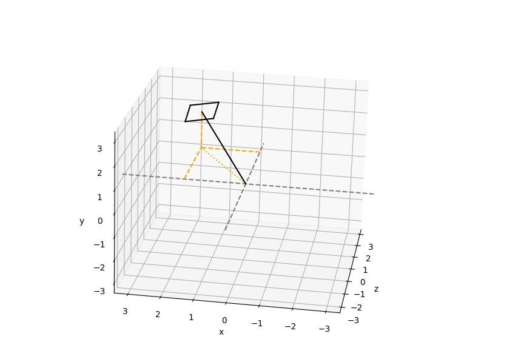
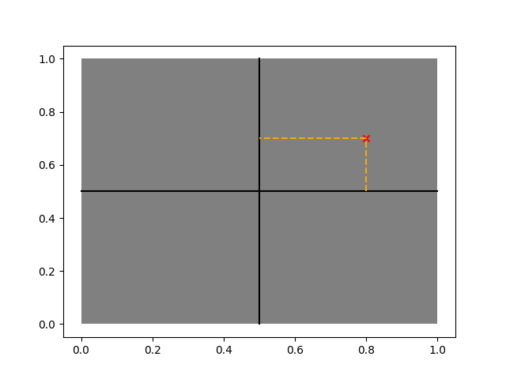

Calculations for full reciprocal space maps
steps of calculation in code
calculate volume start,stop,steps
- for each scan
start pool of processes
- chunk up indices
give each chunk to bin_map_with_indices
incides are either skipped or given to bin_one_map
calculates q_vectors for each images and performs weighted 3d bin
each chunk gives a shared_memory_volume,shared_memory_counts
read in these shared memorys, then sum along axis
get normalised map by dividing volume/shared_memory_counts
How are Q-vectors calculated
calculate vector in real space to the centre of detector

def get_detector_vector(self, frame: Frame) -> Vector3: # The following are the axis in the lab frame when all motors are @0. gamma_axis = np.array([0, 1, 0]) delta_axis = np.array([-1, 0, 0]) gamma = self.data_file.gamma[frame.scan_index] delta = self.data_file.delta[frame.scan_index] #add in correction so that dcd is always along z - \ #this assumes there is never the need for a single crystal scanning when using the dcd if self.setup==self.dcd: lab_beam_vector = self._dcd_incident_beam_lab lab_beam_arr=lab_beam_vector.array tan_inc_angle=lab_beam_arr[0]/lab_beam_arr[2] inc_hor_angle=np.degrees(np.arctan(tan_inc_angle)) gamma-=inc_hor_angle # Create the rotation objects. gamma_rot = Rotation.from_rotvec(gamma_axis*gamma, degrees=True) delta_rot = Rotation.from_rotvec(delta_axis*delta, degrees=True) # Combine them (gamma acts after delta). total_rot = gamma_rot * delta_rot # Act this rotation on the [0, 0, 1], which is the vector pointing # to the detector when gamma, delta = 0, 0. to_detector = np.array([0, 0, 1]) detector_vec = Vector3(total_rot.apply(to_detector), Frame(Frame.lab, self, frame.scan_index)) # Finally, rotate this vector into the frame that we need it in. self.rotate_vector_to_frame(detector_vec, frame) return detector_vec
calculated displacement vectors along x and y axis of detector
use the detector rotation to get the vertical and horizontal displacement vectors on the detector
vertical
rot = self.get_detector_rotation(frame) lab_frame = Frame(Frame.lab, frame.diffractometer, frame.scan_index) # Apply this to the y-axis in the lab frame to get the detector vertical # in the lab frame. detector_vert_lab_arr = rot.apply(np.array([0, 1, 0])) detector_vertical = Vector3(detector_vert_lab_arr, lab_frame) # Now put this in the correct frame of reference and return it. detector_vertical.to_frame(frame) return detector_vertical
horizontal
rot = self.get_detector_rotation(frame) lab_frame = Frame(Frame.lab, frame.diffractometer, frame.scan_index) # Apply this to the y-axis in the lab frame to get the detector vertical # in the lab frame. detector_horiz_lab_arr = rot.apply(np.array([1, 0, 0])) detector_horizontal = Vector3(detector_horiz_lab_arr, lab_frame) # Now put this in the correct frame of reference and return it. detector_horizontal.to_frame(frame) return detector_horizontal
use pixel shifts in x and y to calculate vector shifts away from centre pixel to give vector pointing towards image i,j

detector_distance = self.metadata.get_detector_distance(self.index) detector_distance = np.array(detector_distance, np.float32) vertical = self.metadata.get_vertical_pixel_distances(self.index) horizontal = self.metadata.get_horizontal_pixel_distances(self.index) k_out_array[i, j, 0] = ( det_displacement.array[0]*detector_distance + det_vertical.array[0]*vertical[i, j] + det_horizontal.array[0]*horizontal[i, j]) k_out_array[i, j, 1] = ( det_displacement.array[1]*detector_distance + det_vertical.array[1]*vertical[i, j] + det_horizontal.array[1]*horizontal[i, j]) k_out_array[i, j, 2] = ( det_displacement.array[2]*detector_distance + det_vertical.array[2]*vertical[i, j] + det_horizontal.array[2]*horizontal[i, j])
when loading image array, there are solid angle corrections applied
data_shape = self.data_file.image_shape self._init_relative_polar((data_shape[0]+1, data_shape[1])) theta_diffs = np.copy(self.relative_polar) theta_diffs = -np.diff(theta_diffs, axis=0) # Remember the minus sign! self._init_relative_azimuth((data_shape[0], data_shape[1]+1)) phi_diffs = np.copy(self._relative_azimuth) phi_diffs = -np.diff(phi_diffs, axis=1) # Now return the relative polar/azimuth arrays to normal. self._init_relative_polar() self._init_relative_azimuth() self._solid_angles = -phi_diffs*theta_diffs self._solid_angles /= np.max(self._solid_angles) # Finally, store as a single precision float. self._solid_angles = self._solid_angles.astype(np.float32) arr /= self.metadata.solid_angles
- Do polarisation correction
python code gets vectors and polarisation of diffractometer setup, and passes values to C function
python
# The beam is always polarised along the synchrotron x-axis in I07. self.polarisation = Polarisation(Polarisation.linear,\ Vector3(np.array([1, 0, 0]), Frame(Frame.lab))) mapper_c_utils.linear_pol_correction(polarisation_vector, k_out, intensities)
C
vector_float32 *k_out = (vector_float32 *)(vector_array_ptr + i * 3); // Carry out the dot product. Since both vectors are normalised, this // just gives us the cosine of the angle between them. float cos_phi = k_out->x * polarisation->x + k_out->y * polarisation->y + k_out->z * polarisation->z; // The polarisation correction is proportional to the square of the sine // of this angle. float sin_sq_phi = 1 - cos_phi * cos_phi; // Normalise the intensities. intensities[i] /= sin_sq_phi;
Normalise the vector to calculate the unit exit wavevector ( \(k_{f}\)), to then subtract the incidient wavevector (\(k_{i}\)) to calculate the \(Q\) vector
\(Q=k_{f}-k_{i}\)
apply UB matrix to convert Q values into HKL values
get HKL vectors for all pixels in an image, and then bin these into 3D volume
python
q_vectors = image.q_vectors(FRAME, oop=oop) weighted_bin_3d(q_vectors, image.data, RSM, COUNT, start, stop, step, min_intensity) #this then calls the mapper_c_utils function mapper_c_utils.weighted_bin_3d( coords, start, step, shape, weights, out, count, min_intensity)